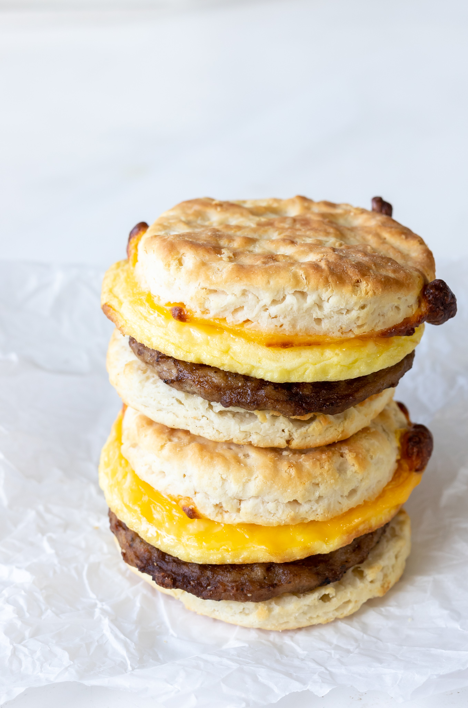

To-Go Breakfast Sandwich

The fast and simple air-fryed egg breakfast sandwich is perfect for people who don't have time to waste in the morning to make a meal. Or maybe you just dont feel like cooking, this recipe is what you've been waiting for.
Ingredients
- nonstick cooking spray
- 1 large egg
- 1 slice American cheese
- 1 fully cooked breakfast sausage patty
- 1 English muffin split in half
- salt and pepper
Cooking Steps
- Preheat air fryer to 350 degrees F
- Mold a circular bowl out of 5 inch aluminum foil(use a mason jar). Spray the mold with nonstick spray and crack an egg into the center and season the egg as desired
- Place egg mold and sausge patty next to eachother in the air fryer and cook for 4 minutes. Flip the patty, and muffin halves and cook for another 4 minutes
- Take one muffin half out and add cheese, combine the rest of the ingredients and you have a fast and simple breakfast sandwich. Enjoy!